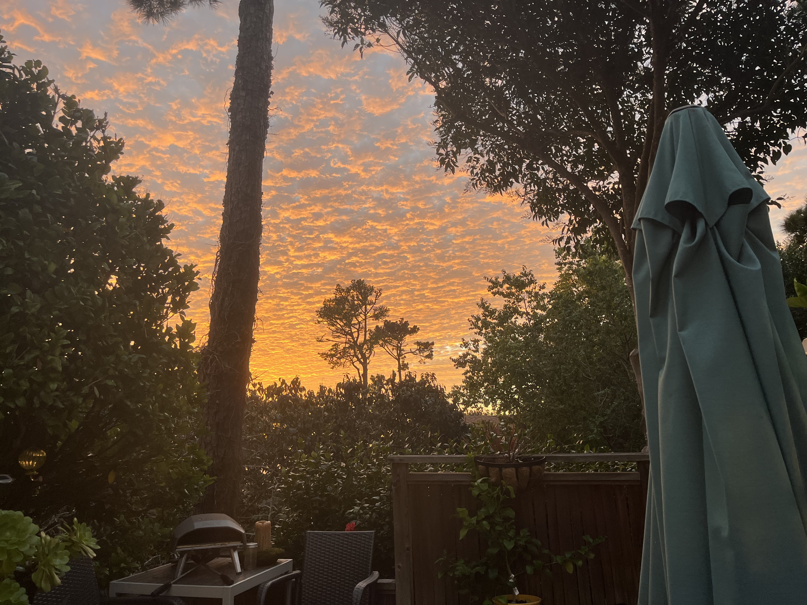

Experiment 02 - Living Impressions
Description
Sunsets are beautiful and it served as the center point of my project, I aimed to make the sunset gradient the forfront of my generative image. Below you will see my inspirtation image, there is no link to the source, as I took it myself! Thank you for viewing my project.
Technical
Going step by step here are some of the most interesting portions of this assignment:
Starting with the sky I created an array of permitted colors which served as the baseline for all my permuations. These colors included: orange, red, blue, purple, and yellows. When creating the sunset gradient sky I went line by line generating what color should be there.
In particular, I used line segments to track how far I was along each line in the sunset to determine what color should come next. I used lerpColor() to meld the colors together to create a beautiful skyline.
Next I wanted to address the clouds in the image as that is what let the color pop in the original image. The implementation was pretty simple, just a bunch of sine waves with different amplituteds and opacities to create a more dynamic skyline as depicted in the original image
On the right side of the original image a tree is shown, I wanted to use this to hopfully show the rushing of the wind through its leaves. First, the trunk is made up of bezier curves in order to make a complex and dynamically changing tree. Then, for the leaves, which are made up of cirlces, I simply repopultated them every frame with varying densities and sizes to make the leaves look like they are getting pushed around by the wind.
Lastly, I felt like a lone rustling tree was not enough life and I could do more to make the image more interactive. Thus, I added a back landscape and moving grass blades. The static background was made up of arrays of verticies that only change every permutation. These verticies differed in height, layer and color, and utlizied noise for some natural variation. For the grass I placed them randomly depending on the seed, and made an animation so they could move back and forth. They all sway at different speeds in the form of a sine wave, this was in hopes that it would make the image feel more alive.
Reflection
Since the picture was my own it was really fun to see how far I could take it since I felt a sort of connection to it. I feel very satisfied with my final result and while I could have added more aspects that would elevate it more, I wholeheartedly feel like the amount of effort I put in shows.